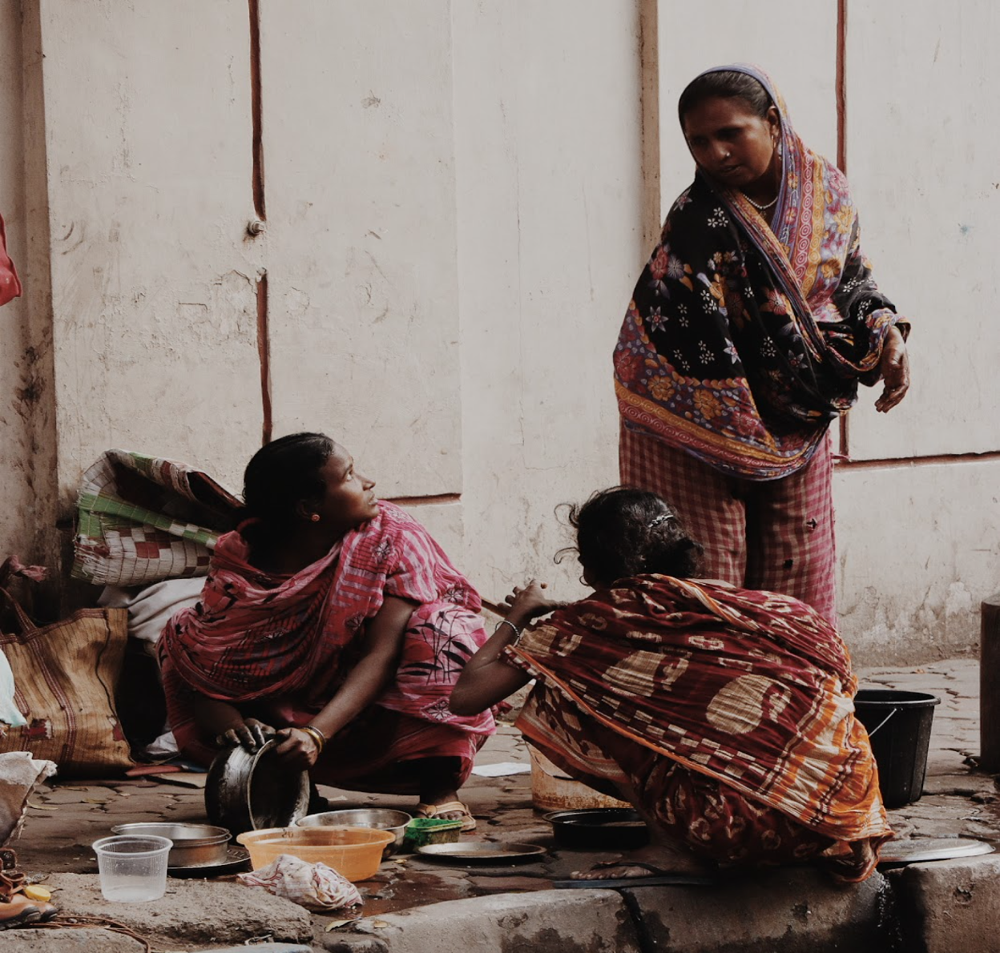

"Moments captured as timeless memories."
We have been chasing this idea for centuries to preserve portions of ourselves and the world. This pursued permanence is achieved solely through art, and more vividly through photography. A smile and its history, a pet and the love they symbolise, these everyday scenarios are framed as stories with one click. Over time this has evolved to echo the voices of the subjects– to bring forth a glimpse of the life they lead. Sometimes it sparks a revolution and sometimes it brings serenity, but it always evokes thought. Thought about how the world really works and develops. In a world where each day seems to be a lot faster than the previous one, we often fail to look around and understand ourselves or our surroundings.
Photographs are often a source of many questions, especially "How?" or "Why?". A frame can change us, our ideas, opinions and ideologies within a moment.
Yet what seems is not always what is.
The ideal principles behind the creation of a frame are the main pillars of photography. As more and more people grow interested in photography, approaching this world with a lens has become easier with the growth of technology and access to resources. What has come to really matter is the person behind the lens clicking the shutter. They are the ones who participate in a mystifying journey that the rest of the world is usually unaware of– the journey of photography, where it's not the aperture, the tone, space or even the lens which one looks through, but the soul.
In the vast ocean of this art, some genres stand out as favourites, like documented and wildlife photography. Perspectives and time differ with the subject and their photographer, but ethics are timeless. The mass consumption of photography for social media aesthetics ensures that people ignore their principles as photographers. Chasing validation commercialises this art form.
In documented photography, when we click a picture and instantly put it up on social media, how many times have we thought of taking consent of the subject? The fruit vendor might not be willing to show his face to the entire world. We often undermine the severity of this, asking, "Does it actually matter?” Well, overlooking how some might face discomfort by being under the public eye, we are also stealing a moment of his life and baring it to the world with no concern of privacy or consent.
There lie some other fallacies too, insidiously creeping into the ethics of photography. Sometimes, we are so bent on obtaining the picture that will garner the most attention that we sometimes lead people on by stereotypically placing the subject leading to misinterpretation. The most common examples are an old sad man sitting by the side of the road or a poor woman begging for food or an ideal “aesthetic“ picture of droplets of rain on a window-pane. We are often so engrossed in this search of the “harsh realities of the modern world “ through photographs and frames that we tend to forget and realise that simplicity and happiness are just as meaningful to portray through the lens.
What we feel free to show the world is also who we are, what we stand for and what makes our contribution acceptable to the civilised world. The gruesome pictures presented to ignite rage and disgust are a part of this. To make public a bloody animal beaten to death for the number of shares it will get chips at our social sanity. When we look at a hungry poor person on the road, click their picture but don’t offer help, we lose our morals. The camera is simply a device. What it captures depends on our personal principles. To compromise these for the popularity and audience reaction is to disrespect ourselves.
These problems aren’t limited to just documented photography but extend to wildlife photography as well. We limit ourselves to just clicking the picture of a rare animal, bird, or an insect. In reality, there are no such finishing lines. The intention of wildlife photography is to encode a message in a frame. Yet sometimes we fail to deliver. We end up hurting the very ones we are supposed to hold close. We go to the forests and often use flash photography, go too close to a bird's nest to get a food shot, make noises so that an animal shows up. Each of these actions, although aiding us in a beautiful frame, disturbs the subject in its natural habitat.

As photographers, we all have an inherent love of our subjects. What we capture holds a place in our heart. To violate that sanctity is to violate our chosen religion of art. So, feel the shot, live it, hold compassion for it and promise to not fail the purpose of photography.